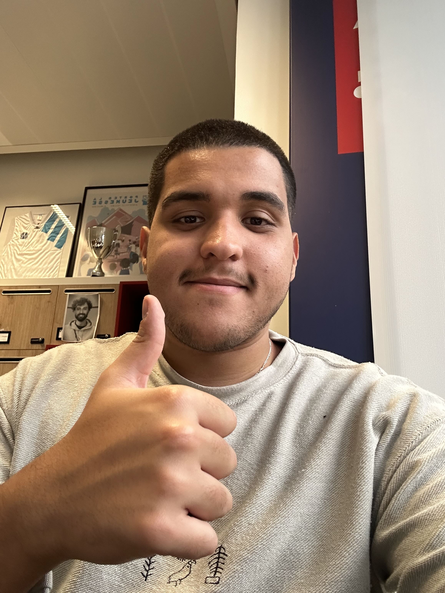

01

SUPDE PUB
Formation
Sup de Pub
Une formation en communication pour comprendre les marques, les idées, les audiences et les mécaniques créatives qui rendent un message mémorable.
À propos
Je suis Jad, étudiant en communication, créateur de contenu et designer UI/UX. Mon terrain de jeu : imaginer des formats qui captent l’attention, construire des identités visuelles fortes et concevoir des interfaces simples, utiles et mémorables.
Parcours

SUPFormation
Une formation en communication pour comprendre les marques, les idées, les audiences et les mécaniques créatives qui rendent un message mémorable.
Branding · DA
Premières expériences concrètes autour de la direction artistique, de l’univers visuel, du branding et de la création de supports premium.
Social content · IA
Produire vite, raconter clairement et transformer des sujets tech ou IA en contenus accessibles, engageants et adaptés aux plateformes sociales.
Sport · Activation
Travailler sur des projets marque, sport, football, rugby et activations avec une logique de contenu impactant et social-first.
Startup · UX/UI
Passer d’une idée à un produit : imaginer une application anti-gaspillage alimentaire pensée pour le marché marocain, du branding à l’interface.
Compétences
Penser et produire des formats conçus pour les plateformes : reels, vidéos courtes, scripts, rythme, accroche et storytelling.
Construire un univers clair, cohérent et mémorable : moodboards, identité, look & feel, déclinaisons et cohérence visuelle.
Concevoir des interfaces utiles, lisibles et engageantes : architecture, parcours, wireframes, prototypes et design mobile-first.
Impact
À travers des contenus courts, formats social media et projets éditoriaux.
Entre contenu, branding, direction artistique, UX/UI et supports digitaux.
Marques, agences, médias ou organisations accompagnées sur différents formats.
À apprendre, produire, tester, itérer et construire un profil créatif hybride.
Explorer
Découvre mes projets selon l’angle qui t’intéresse : contenus social-first ou expériences UX/UI.